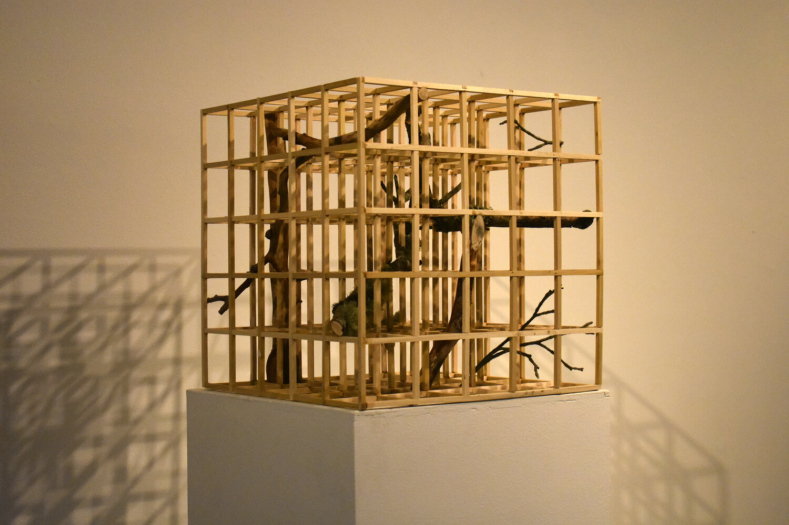

An intellectual & personal archive
A life examined.
A world explored.
I’m Nathan. This is a gathering of my writing, creative work, and the experiences that shape how I see the world.
Enter the writingsWritings ↗
Economics, classics, literature, and the questions in between.
II / The workProjects ↗
Experiments in design, film, and creative practice.
III / The livedLife & photographs ↗
School years, open water, faraway places, and familiar faces.
From the shelves
Selected writings
- Economics & ethics · 2020 Just Wage: A Kantian Analysis ↗
- Classics · 2023 Livy’s Scipio Africanus: Embodiment of an Ideal Commander ↗
- Fiction · 2020 Portrait of a Traveler ↗

People & perspectives
The people who
open our eyes.
Art, conversation, and a different way of seeing. Revisit an interview from the school years.
Read the Simon Li interview ↗A note on this collection
Not a finished portrait.
A continuing conversation.
Begun in 2020, this site is a place to keep creative work, revisit old questions, and make room for what comes next.
About this archive ↗